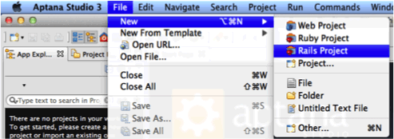
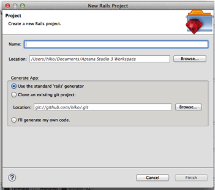
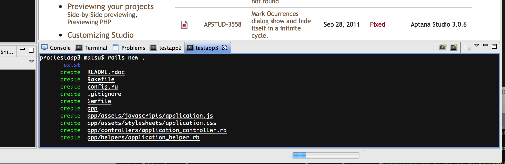
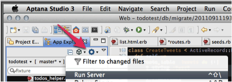
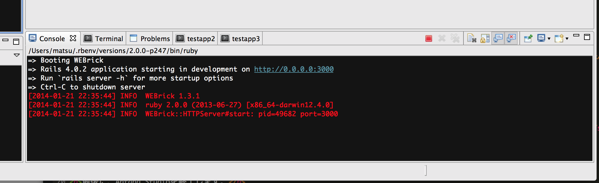
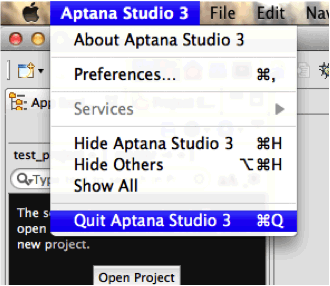

Ruby on Railsの動作確認
Aptana StudioでRuby on Railsのプロジェクトを作成し、Ruby on Railsを起動してみます。
手順
Aptana Studioを立ち上げ、[File] -> [New] -> [Rails Project]を選択します。

[Name] にプロジェクト名を入力し、[Finish]ボタンを押します。

右下に表示されているウィンドウに、以下のような出力が出ていれば成功です。下に表示されている青いバーが終了するまで待ちます。

[App Explorer]タブのギアの形をしたアイコンから、[Run Server]を選択して、サーバを起動します。

Console画面に以下のような表示が出力されれば、成功です。。

ブラウザで、以下のページを開き、ページが表示されることを確認します。
以下のような、"Welcome aboard"と表示されていれば、正常にセットアップが完了したことになります。

最後に、Aptana Studioを終了します。
